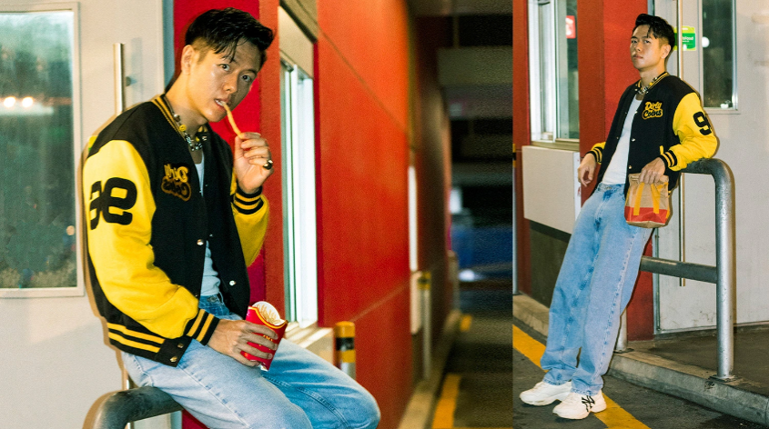
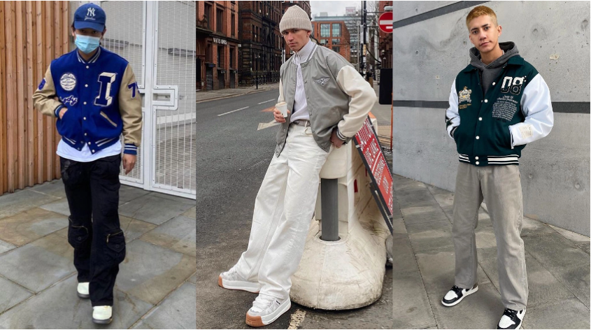
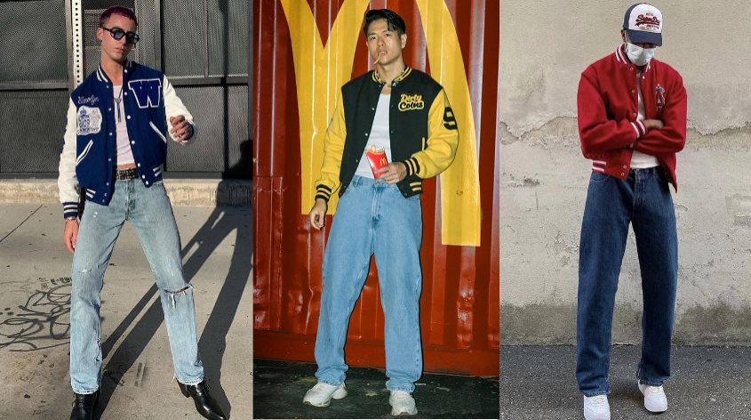
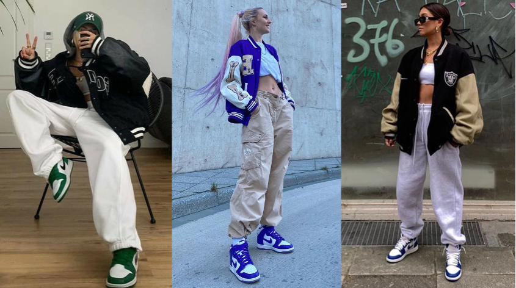

Từ một chiếc áo thể thao học đường, Varsity đã trở thành một biểu tượng đương đại của thời trang đường phố, với rất nhiều phong cách phối đồ đa dạng. Cùng DirtyCoins ‘chốt’ ngay những tips phối đồ cho Varsity jacket vừa cá tính vừa năng động nha!

Những năm gần đây, xu hướng thời trang đường phố lên ngôi cũng là lúc Varsity jacket một lần nữa tạo nên trào lưu mới trong nền thời trang thế giới. Những chiếc áo khoác vốn được xem là biểu tượng cho sức trẻ học đường nay được biến tấu với nhiều thiết kế thời thượng và cá tính hơn. Bạn có thể tìm hiểu rõ hơn về nguồn gốc của loại jacket này qua bài viết này và nắm ngay tips phối đồ với Varsity jacket sao cho đẹp nhất qua những cách dưới đây!
VARSITY JACKET + QUẦN ỐNG RỘNG
Công thức được coi như mẫu mực của cộng đồng những người yêu thích hiphop, sự kết hợp này khiến bạn có một diện mạo rất bụi bặm nhưng không kém phần hiện đại. Tuy không phải quá kén dáng người, nhưng bạn cần phải chú ý một chút khi chọn những item để layer với nhau mà không tạo cảm giác quá rối rắm hay luộm thuộm.
Bật mí một chút là bạn hoàn toàn có thể sử dụng những chất liệu ‘lạ’ như quần nhung tăm (còn gọi là corduroy) hay thậm chí là lông cừu (wool / fleece) để có một outfit mang chất retro nhưng cũng rất cá tính đó nha!

(Nguồn: pinterest, pause magazine)
Varsity jacket cổ điển có form classic fit, tức loại áo này sẽ vừa với dáng người mặc và có ống tay rộng vì là áo khoác thể thao. Sau này, khi đã bước chân ra khỏi thời trang học đường và len lỏi vào thế giới streetwear, chiếc áo này mới dần được biến tấu thêm form oversize fit.
VARSITY JACKET + QUẦN JEANS
Cách phối đồ ‘cổ điển’ đã từng cực kì phổ biến tại Mĩ thời kì thập niên 50, 60 của thế kỉ trước, khi những chiếc quần jeans slim fit trở thành một biểu tượng của phong trào nổi loạn và cách tân văn hóa đương thời. Trải qua nhiều năm, sự kết hợp giữa Varsity Jacket và quần jeans vẫn giữ nguyên hơi thở hiện đại khi được phối cùng phụ kiện hay được biến tấu cùng nhiều dáng quần jeans, đa dạng cho cả nam và nữ.
Sự kết hợp đầy khỏe khoắn giữa Varsity Jacket và jeans thịnh hành trong suốt một thời gian khá dài và form áo có ống tay rộng nhưng phần thân vừa vặn trở thành một định nghĩa cho ‘classic fit’ đối với Varsity Jacket. Tới thời kỳ cuối thập niên 90, đầu 2000, khi những form dáng oversize trở nên phổ biến trong cộng đồng thời trang đường phố, Varsity Jacket cũng được biến tấu với phần thân dài và rộng hơn, Tuy nhiên, vẫn không khó để bắt gặp những chiếc áo Varsity với classic fit được những thương hiệu như Tommy Hilfiger, Polo Ralph Lauren ‘trình làng’.

(Nguồn: pinterest, pause magazine)
VARSITY JACKET + QUẦN JOGGER
Đây được xem là cách phối đồ cơ bản và dễ áp dụng nhất, set đồ này phù hợp với nhiều hoàn cảnh và mang đến sự thoải mái nhưng không kém phần khỏe khoắn. Đừng ngại mix thêm một đôi hype hay chunky sneakers nữa để có một outfit ‘chuẩn’ streetwear nha!

(Nguồn: pinterest)
Bật mí là bạn có thể tham khảo mẫu quần mới nhất của DirtyCoins tại đây
Đây chắc chắn sẽ là set đồ hoàn hảo cho những dịp gặp mặt trong thời tiết cuối năm.
VARSITY JACKET + ÁO CROPTOP
Đây sẽ là lựa chọn thích hợp cho các bạn nữ muốn khoe vòng eo nhỏ xinh một cách sexy và khéo léo, trong khi đó chiếc áo varsity sẽ mang đến sự cá tính hơn cho toàn set đồ của bạn đó! Hãy chú ý tới màu sắc của croptop để có thể hài hòa với tông màu của áo Varsity mặc cùng nha!